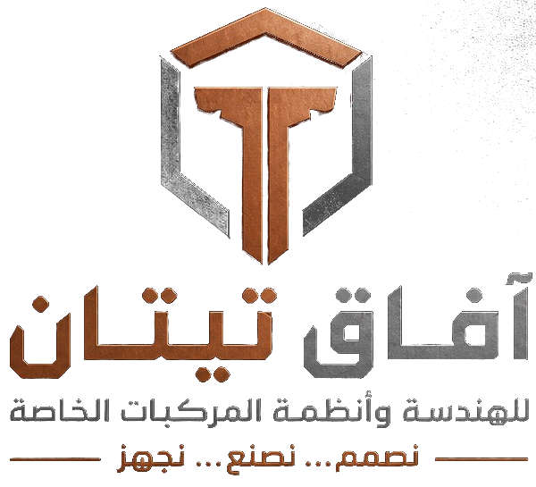
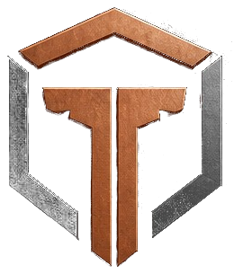

مقترح إنشاء منظومة القيادة والمراقبة المتنقلةنقترح إنشاء منظومة قيادة ومراقبة متنقلة تمنح غرفة العمليات صورة حيّة وموثّقة لما يجري في الميدان: مواقع الدوريات والضباط، وبث الكاميرات المباشر، والتسجيل المحلي، وبلاغات الاستغاثة، وتوزيع المهام، وكل ذلك بواجهة عربية بالكامل.
تختلف هذه المنظومة عن العروض الجاهزة في أربعة أمور جوهرية:
الشيفرة المصدرية والبيانات وقواعد التشغيل ملك للجهة المستفيدة، لا ترخيص مؤجَّر ولا اعتماد على مزوّد.
واجهة وتقارير وتنبيهات بالعربية من الأساس، لا ترجمة ملحقة بنظام أجنبي.
الخوادم والتسجيلات والخرائط داخل البلاد، دون أي اتصال بخوادم خارجية، ويمكن إثبات ذلك عملياً.
لا رسوم لكل جهاز ولا اشتراكات دعم شهرية مفتوحة المدة؛ التوسع يعتمد على التجهيزات لا على التراخيص.
نعتمد في البناء على محركات مفتوحة المصدر مجرَّبة عالمياً، نُهندسها ونربطها ونطوّر فوقها غرفة عمليات عربية مملوكة. ونقترح مساراً من ثلاث مراحل يبدأ بعرض حيّ مصغّر ثم مرحلة تجريبية ثم التوسع على مستوى المدينة، بحيث يُبنى كل ما يُستثمر فيه فعلياً ويُعاد استخدامه في المرحلة التالية.
تعمل الدوريات اليوم في الغالب بوسائل اتصال منفصلة، وتفتقر القيادة إلى صورة موحّدة وآنية لما يجري في الميدان.
لا توجد شاشة واحدة تُظهر مواقع الوحدات وحالتها، ويعتمد التنسيق على الاتصال الشفهي المتفرّق.
إن وُجدت التسجيلات فهي على أجهزة منفردة يصعب جمعها، وإن غابت فلا مرجع موثّق عند وقوع حادثة.
لا يملك القائد رؤية حيّة تساعده على قرار سريع: أين أقرب دورية؟ ومن يستجيب لاستغاثة ضابط؟
كل عرض مستلم مرتبط بمزوّد خارجي وبأسعار وشروط لا تملك الجهة التحكم فيها.
أظهرت العروض الأجنبية التي جرى استعراضها نمطاً متكرراً يحوّل الجهة من مالكة للمنظومة إلى مستأجرة لها.
| النقطة | ما تعنيه عملياً |
|---|---|
| رسوم لكل جهاز | كلفة تزداد مع كل سيارة وكاميرا تُضاف، وتتكرر دورياً دون سقف معلن. |
| دعم شهري دائم | اشتراك دعم لا ينتهي؛ وتوقفه يعني توقف الخدمة أو التحديثات. |
| الشيفرة المصدرية | غير متاحة، أو متاحة بسعر يُترك لتقدير الجهة دون تحديد، فلا قدرة على التطوير أو التدقيق. |
| ترخيص وخوادم خارج ليبيا | بيانات تشغيلية حساسة قد تمرّ أو تُخزَّن خارج البلاد، ويمكن تعطيل المنظومة عن بُعد. |
| دعم عربي ضعيف | واجهات مترجمة جزئياً، وتقارير لا تراعي الاتجاه والخطوط والمصطلح الأمني المحلي. |
| الارتهان للمزوّد | لا مخرج عملياً: الانتقال إلى مزوّد آخر يعني البدء من الصفر. |
ملاحظة: يعتمد هذا القسم على العروض التي استُلمت في إطار المناقصة، وتُقدَّم تفاصيل المقارنة في الاجتماع الفني عند الطلب.
منظومة من أربع طبقات مترابطة، تبدأ من المركبة والضابط في الميدان وتنتهي بغرفة عمليات عربية داخل مركز بيانات محلي.
ست كاميرات (أمامية، أمامية بتقريب، خلفية، جانبيتان، داخلية)، وتحديد مواقع GPS، وزر استغاثة، ومانع تشغيل المحرك بتفويض مزدوج.
كاميرا صدر ببث مباشر إلى غرفة العمليات، وزر استغاثة وتتبّع لموقع الضابط وحالة بطارية الجهاز.
خوادم داخل ليبيا لاستقبال البث والتسجيل والخرائط وقاعدة البيانات، مع غرفة عمليات بواجهة عربية كاملة.
رصد الأشخاص والمركبات وإصدار تنبيه فوري للمشغّل، وتتسع المراحل اللاحقة لإدارة الحوادث والتعرف على اللوحات الليبية.
يوضح المخطط تدفق البيانات من الميدان إلى المركز، وجميعها داخل شبكة محلية مؤمّنة دون أي مسار إلى الخارج.
جميع المكونات تعمل داخل ليبيا. ويمكن إثبات ذلك عملياً بفصل المنظومة عن الإنترنت أثناء العرض ومتابعة التشغيل دون أي انقطاع.
لا نبدأ من الصفر في كل مكوّن، ولا نشتري منظومة مغلقة. نختار محركات عالمية مجرَّبة ومفتوحة المصدر، ثم نُهندس تكاملها ونطوّر فوقها ما يخص احتياج الجهة، فتبقى المنظومة كلها ملكاً لها.
| المحرك | الدور في المنظومة |
|---|---|
| MediaMTX | استقبال البث المباشر من الكاميرات وتوزيعه على غرفة العمليات بزمن تأخير منخفض. |
| Frigate | تحليل الفيديو بالذكاء الاصطناعي ورصد الأشخاص والمركبات. |
| Traccar | استقبال بيانات الموقع من أجهزة التتبّع وإدارة الأجهزة. |
| PostgreSQL | قاعدة البيانات الرئيسية للوحدات والمهام وسجل التدقيق. |
| MQTT | رسائل لحظية خفيفة بين الأجهزة ومركز القيادة، ومنها الاستغاثة. |
| OpenStreetMap | بيانات خرائط مفتوحة تُخزَّن محلياً فتعمل الخريطة دون اتصال. |
نقدّم التزامات يمكن التحقق منها عملياً، لا وعوداً عامة.
تُسلَّم الشيفرة المصدرية الكاملة للمنظومة المطوَّرة مع وثائقها، وتبقى البيانات التشغيلية والتسجيلات ملكاً حصرياً للجهة.
تعمل المنظومة دون إنترنت. ويمكن في أي وقت فصل الشبكة الخارجية ومراقبة أن التشغيل لا يتأثر، ومراجعة سجلات الشبكة.
تُحدَّد مدة حفظ التسجيلات بقرار الجهة، ويُسجَّل كل اطلاع وتصدير وحذف في سجل تدقيق يصعب التلاعب به أو إخفاء أثره.
الإجراءات الحساسة، مثل إيقاف محرك مركبة عن بُعد، لا تُنفَّذ إلا بتفويضين مستقلين وتُوثَّق كاملة.
اللغة الرسمية لكل شاشة وتقرير وتنبيه هي العربية، بالاتجاه والخطوط والمصطلحات المناسبة للعمل الأمني.
لا يتوقف التشغيل بانتهاء عقد دعم؛ فالجهة تملك ما يلزم لتشغيل المنظومة وصيانتها بنفسها أو عبر أي جهة ليبية.
آفاق تيتان للهندسة وأنظمة المركبات الخاصة شركة هندسية تجمع التصميم والتصنيع والتجهيز في منظومة عمل واحدة: نصمم، نصنع، نجهز.
هويتنا قائمة على الدقة والاعتمادية والقدرة على التنفيذ، وحضورنا محلي يتيح لنا الإشراف على التركيب والتشغيل والدعم من داخل ليبيا مباشرة.
غرفة العمليات العربية وطبقة التكامل ومنطق التشغيل.
ربط المحركات مفتوحة المصدر بالأجهزة الميدانية والخرائط والكاميرات.
تجهيز المركبات وتركيب الكاميرات والأجهزة وفق معايير الصناعة.
تدريب المشغّلين والمشرفين والفنيين على التشغيل اليومي والطوارئ.
صيانة وتحديثات ومتابعة أداء، دون ارتهان بعقد غير محدد.
إضافة وحدات وكاميرات ومراكز جديدة على المعمارية نفسها.
ثلاث مراحل متدرجة، يُبنى في كل منها ما يُعاد استخدامه في التالية، ويُتخذ قرار المتابعة بعد كل مرحلة بناءً على ما شوهد فعلياً.
تشغيل غرفة العمليات بوحدات قليلة أمام الجهة، مع إثبات العمل دون إنترنت، والاطلاع على البث والاستغاثة وتوزيع المهام.
٥ سيارات و١٠ ضباط و٥٠ كاميرا ذكية في الميدان، مع التدريب والتشغيل الفعلي وقياس الأداء وتحسين الواجهات والتقارير.
زيادة عدد المركبات والضباط والكاميرات، وإضافة إدارة الحوادث والتعرف على اللوحات الليبية، وتوسيع مركز البيانات.
نحو ٩٦٪ من استثمار العرض التوضيحي ينتقل مباشرةً إلى المرحلة التجريبية، فلا شيء يُهدر. والمدد المذكورة تقديرية وتُثبَّت في العرض الفني بعد الاجتماع.
نقترح مساراً قصيراً وواضحاً يمنح الجهة ما يلزم لاتخاذ قرارها بثقة.
موافقة الجهة على المرحلة الأولى وتحديد موعد التنفيذ.
مناقشة المتطلبات والمعمارية ونطاق المرحلة التجريبية مع الفريق المختص.
وثيقة مفصّلة بالنطاق والجدول والكلفة وشروط التسليم والملكية.